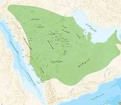
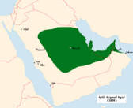
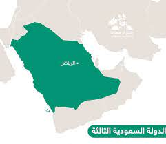

يوم التأسيس
ماهو يوم التأسيس ؟
ماهو يوم التأسيس
يوم التأسيس السعودي هو ذكرى تأسيس الدولة السعودية،
ويوافق 22 فبراير من كل عام. في 27 يناير 2022 أصدر
الملك سلمان بن عبد العزيز آل سعود أمراً ملكياً بأن يكون
يوم 22 فبراير من كل عام يوماً لذكرى تأسيس
الدولة السعودية، باسم يوم التأسيس، ويصبح إجازة رسمية، ويوافق هذا اليوم تاريخ 30 جمادى
الآخرة من عام
بناءً على ما استنتجه
وفقاً للمعطيات التاريخية التي حدثت خلال تلك الفترة وشهدت تولي الإمام
محمد بن سعود الحكم في الدرعية والعديد من الإنجازات في عهده.
الى ماذا يرمز شعار يوم التأسيس
الى ماذا يرمز شعار يوم التأسيس
تشير رمزية (الصقر) في تفاصيل الشعار إلى رياضــة الصيــد بالصقــور والهواية الأشهر فــي مجتمــع
لجزيــرة العربيــة وهــي أحد أصنــاف علــم "البيــزرة " المعــروف فــي تراثنــا العربي، وعرف لدى العرب
أنـواع من الصقـور أكثرها شعبية "الحـر والشـاهين والوكري"، وتأتـي مهاجـرة إلـى الجزيـرة العربيـة من
أواسط آسيا إلى منطقة الخليج العربي ويتمركز وجودها في شمال شرق الجزيرة العربية وشرقها حتى
أطراف الربع الخالي حيـث تصـاد فيهـا أو يؤتـى بهـا مسـتوردة مـن مواطنهـا
لأصليـة، عدا "الوكـري وشـاهين الجبـل " المتوطنـة فـي الجزيـرة العربية.
ماذا يعني يوم التأسيس للسعوديين
ماذا يعني يوم التأسيس للسعوديين
يوم التأسيس للسعوديين يمثل يومًا مهمًا وذا طابع وطني قوي، حيث يتم الاحتفال به للاحتفاء
بتأسيس المملكة العربية السعودية في 23 سبتمبر 1932. يكون هذا اليوم فرصة للتفكير في تاريخ
الوطن، والتأمل في التطورات والإنجازات التي حققتها المملكة على مر السنين
للسعوديين، يوم التأسيس يعبر عن الوحدة الوطنية والتلاحم بين أفراد المجتمع. يتم التعبير عن الفخر
والانتماء للوطن، وتظهر العديد من الاحتفالات والفعاليات التي تشمل العروض الوطنية، والفعاليات
الثقافية والرياضية. الناس قد يرتدون الزي الوطني، ويشاركون في المسيرات والاحتفالات العامة
يعتبر يوم التأسيس أيضًا وقتًا لتجديد العهد بالوحدة والتسامح، وقد يشمل الاحتفال أيضًا جوانب
دينية واجتماعية. يعكس هذا اليوم روح الإرادة والتحدي التي قادت إلى تأسيس المملكة والتي
استمرت في توجيهها نحو التقدم والازدهار
متى تأسست المملكة العربية السعودية ومن مؤسسها
متى تأسست المملكة العربية السعودية ومن مؤسسها
تأسست المملكة العربية السعودية في يوم الثلاثاء الموافق 23 من شهر ربيع الأول لعام 1344 هـ،
الموافق 23 سبتمبر 1932م. المؤسس الرئيسي للمملكة العربية السعودية هو الملك عبد العزيز بن
عبد الرحمن آل سعود، الملقب أيضًا باسم الملك عبد العزيز آل سعود أو المؤسس
بدأت حملة التوحيد بقيادة الملك عبد العزيز في عام 1902، حينما قام بالسيطرة على مسقط رأسه
الرياض. خلال فترة العقود التالية، قاد الملك عبد العزيز حملات ناجحة لتوحيد المملكة وتثبيت السلطة و الوحدة
الدولة السعودية الاولى
الدولة السعودية الأولى
الدَّوْلَةُ السُّعُودِيَّةُ الْأُولَىٰ (1157 - 1233 هـ / 1744 - 1818 م) هي دولةٌ قامت في شبه الجزيرة العربية، بعد الاتفاق
الذي تمّ بين الأمير محمد بن سعود والشيخ محمد بن عبد الوهاب، والذي ترتب عليه تكوين وحدةٍ سياسيّةٍ كبيرةٍ، على أرض
شبه الجزيرة العربية، ضمن العديد من الكيانات السياسية الصغيرة التي كانت تتواجد في إقليم نجد. وكونت منها وحدةً سياسيّةً
تخضع لنُظمٍ واحدةٍ، وظلت هذه الدولة قائمة حتى تمكن إبراهيم باشا، والي مصر، من إسقاطها بعد استيلائه على عاصمتها
الدرعية في عام 1233 هـ/1818. توالى على حكم الدولة في هذه المدة أربعة حكام، ولعبت الدولة السعودية الأولى منذ
قيامها دورًا كان له آثارٌ بعيدةٌ في التغير الذي أصاب شبه الجزيرة العربية في مختلف ميادين الحياة سياسيًا واقتصاديًا
واجتماعيًا وثقافيًا، حيث وحّدَت ليس فقط الكيانات النجدية الصغيرة بل امتد نفوذها على معظم أجزاء شبه الجزيرة العربية،
وهددت كلًا من العراق والشام، وظلّت تتسع حتى سقطت الدرعية في عام 1818. وأحدثت الدولة السعودية الأولى نظامًا
اقتصاديًا قائمًا على الشريعة الإسلامية كان له أثر بعيد على سكان المناطق التي خضعت لنفوذها ونظمت أمور هذه المناطق
الاقتصادية والمالية. ونجحت في إقامة مجتمعٍ مترابطٍ اجتماعيًّا طيلة فترة سيادتها. وقد شجع حكام الدولة السعودية الأولى العلم والعلماء، وإحياء العلوم الشرعية

الدولة السعودية الثانيه
الدولة السعودية الثانيه
الدولة السعودية الثانية، هي الدولة التي أنشأها تركي بن عبد الله بن محمد آل سعود بعد سقوط الدولة السعودية الأولى في
سنة 1233هـ - 1818م، على يد قوات إيالة مصر العثمانية بقيادة إبراهيم محمد علي باشا. وتمكن الأمير تركي بن عبد الله
بن محمد آل سعود خلال سنوات حكمه من اتخاذ الرياض عاصمة لملكه بدلاً من الدرعية، والتي توسعت بشكل محدود على
عكس سابقتها، ولقد أضر بها الصراع والحروب الداخلية، حيث تسبب اختلاف أبناء الإمام فيصل بن تركي بن عبد الله آل
سعود في إضعاف الدولة والتسبب بسقوطها على يد أمير الدولة السعودية على حائل من أسرة آل رشيد في سنة 1309هـ الموافق عام 1891م

الدولة السعودية الثالثة
الدولة السعودية الثالثة
الدَّولةُ السَّعوديّة الثالثة هي وريثة الدولتين السعوديتين: الأولى والثانية، تأسست في (5 شوال 1319 هـ - 15 يناير
1902م)، على يد الملك عبد العزيز آل سعود والذي تمكن من استعادة مدينة الرياض ليؤسس الدولة السعودية الحديثة
والمعاصرة (المملكة العربية السعودية).
عرفت الدولة السعودية الثالثة بداية عهدها باسم إمارة الرياض وبعد ضم الأحساء سميت إمارة نجد والأحساء وتمكنت الامارة
من التوسع حتى استطاعت عام 1921 من السيطرة على كامل أراضي نجد بعد اسقاط إمارة حائل المنافسة، واصبحت إمارة
نجد والأحساء تعرف باسم سلطنة نجد ومن ثم مملكة الحجاز ونجد وملحقاتها واستمر الاسم قائما حتى إعلان قيام المملكة
العربية السعودية عام 1932.
